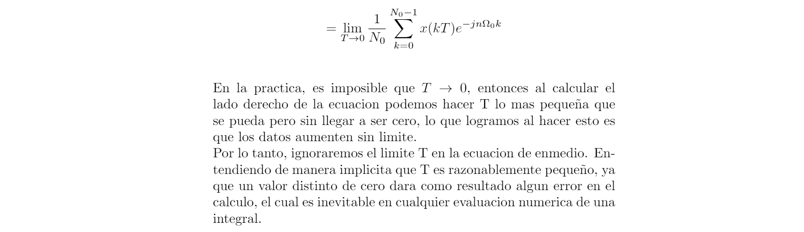
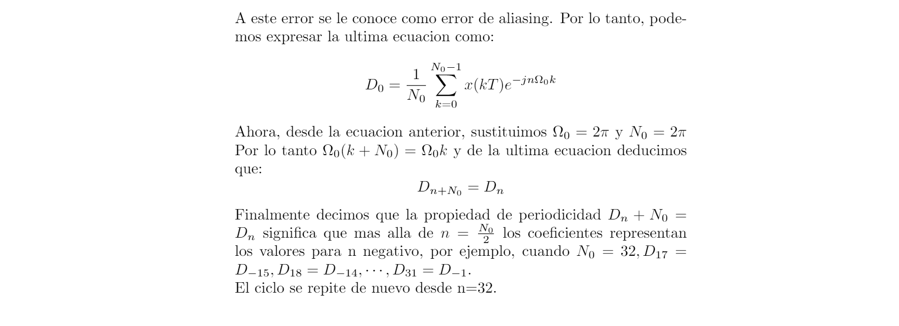
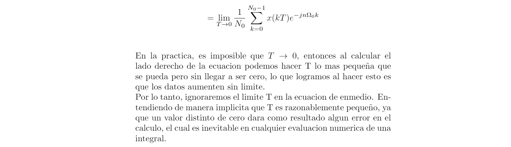
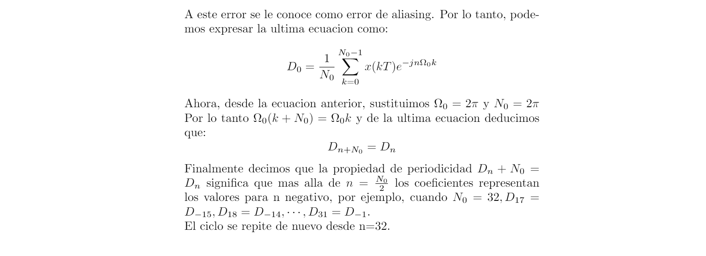
d0=0.5043; a=-7; b=7; t0=0; tf=pi; f=@(t) ((t>0)&(t<=pi)).*exp(-t/2); cn=@(n) 0.5043*(2/((1+16*n^2)^(1/2))); tn=@(n) -atan(4*n); armo=4; so=@(t) f(t)+f(t+pi)+f(t+2*pi)+f(t+3*pi)+f(t-pi)+f(t-2*pi)+f(t-3*pi); sfc(t0,tf,cn,d0,so,armo,a,b,tn)
C0 = 0.5043 C1 = 0.24462 C2 = 0.1251 C3 = 0.08376 C4 = 0.062915

d0=0.5043; a=-21; b=24; t0=0; tf=pi; f=@(t) ((t>0)&(t<=pi)).*exp(-t/2); cn=@(n) 0.5043*(2/((1+16*n^2)^(1/2))); tn=@(n) -atan(4*n); armo=15; so=@(t) f(t)+f(t+pi)+f(t+2*pi)+f(t+3*pi)+f(t-pi)+f(t-2*pi)+f(t-3*pi)+f(t+4*pi)+f(t-4*pi)+f(t+5*pi)+f(t-5*pi)+f(t-6*pi)+f(t+6*pi)+f(t+7*pi)+f(t-7*pi); sfc(t0,tf,cn,d0,so,armo,a,b,tn)
C0 = 0.5043 C1 = 0.24462 C2 = 0.1251 C3 = 0.08376 C4 = 0.062915 C5 = 0.050367 C6 = 0.041989 C7 = 0.035998 C8 = 0.031503 C9 = 0.028006 C10 = 0.025207 C11 = 0.022917 C12 = 0.021008 C13 = 0.019393 C14 = 0.018008 C15 = 0.016808

Ejemplo 6.2
t0=-0.5; tf=1.5; armo=4; a=-7; b=7; c0=0; f=@(t) ((t>-0.5)&(t<=0.5)).*(6*t) + ((0.5<t)&(1.5>=t)).*(6*(1-t)); cn=@(n) (8*3)/((pi*n)^2); sfcc(t0,tf,cn,c0,f,armo,a,b)
D(-4) = 0 D(-3) = 8.2722e-18+0.13509i D(-2) = 0 D(-1) = 7.445e-17-1.2159i D(0) = 0 D(1) = 7.445e-17-1.2159i D(2) = 0 D(3) = 8.2722e-18+0.13509i D(4) = 0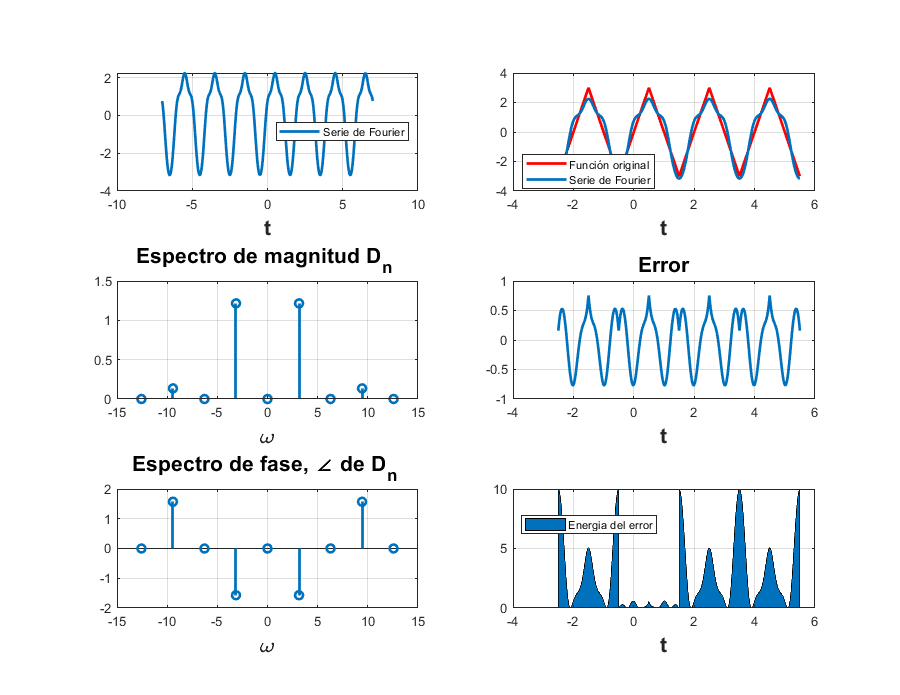
t0=-0.5; tf=1.5; armo=15; a=-7; b=7; c0=0; f=@(t) ((t>-0.5)&(t<=0.5)).*(6*t) + ((0.5<t)&(1.5>=t)).*(6*(1-t)); cn=@(n) (8*3)/((pi*n)^2); sfcc(t0,tf,cn,c0,f,armo,a,b)
D(-15) = 3.3089e-19+0.0054038i D(-14) = 0 D(-13) = 4.4053e-19-0.0071944i D(-12) = 0 D(-11) = 6.1529e-19+0.010048i D(-10) = 0 D(-9) = 9.1913e-19-0.015011i D(-8) = 0 D(-7) = 1.5194e-18+0.024813i D(-6) = 0 D(-5) = 2.978e-18-0.048634i D(-4) = 0 D(-3) = 8.2722e-18+0.13509i D(-2) = 0 D(-1) = 7.445e-17-1.2159i D(0) = 0 D(1) = 7.445e-17-1.2159i D(2) = 0 D(3) = 8.2722e-18+0.13509i D(4) = 0 D(5) = 2.978e-18-0.048634i D(6) = 0 D(7) = 1.5194e-18+0.024813i D(8) = 0 D(9) = 9.1913e-19-0.015011i D(10) = 0 D(11) = 6.1529e-19+0.010048i D(12) = 0 D(13) = 4.4053e-19-0.0071944i D(14) = 0 D(15) = 3.3089e-19+0.0054038i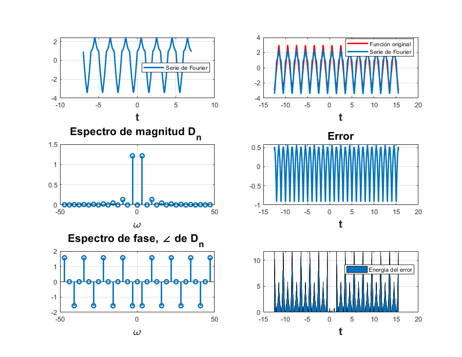
Ejemplo 6.4
cn=@(n) 2/(pi*n); f=@(t) ((t<=(pi/2))&(t>(-pi/2))).*1 + (((pi/2)<t)&(t<=(3*pi)/2)).*0; t0=-pi; tf=pi; c0=1/2; armo=4; a=-7; b=7; tn=-pi; sfccc(t0,tf,cn,c0,f,armo,a,b,tn)
D(-4) = 0 D(-3) = 0.1061-1.2994e-17i D(-2) = 0 D(-1) = -0.31831 D(0) = 0.5 D(1) = 0.31831 D(2) = 0 D(3) = -0.1061-1.2994e-17i D(4) = 0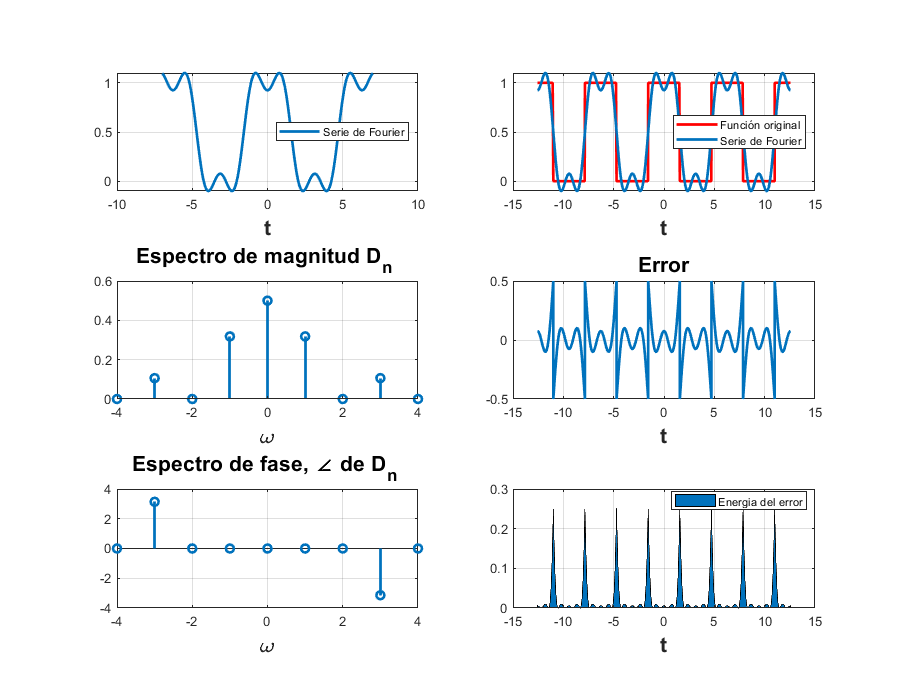
cn=@(n) 2/(pi*n); f=@(t) ((t<=(pi/2))&(t>(-pi/2))).*1 + (((pi/2)<t)&(t<=(3*pi)/2)).*0; t0=-pi; tf=pi; c0=1/2; armo=15; a=-7; b=7; tn=-pi; sfccc(t0,tf,cn,c0,f,armo,a,b,tn)
D(-15) = 0.021221-2.5988e-18i D(-14) = 0 D(-13) = -0.024485 D(-12) = 0 D(-11) = 0.028937-3.5438e-18i D(-10) = 0 D(-9) = -0.035368 D(-8) = 0 D(-7) = 0.045473-5.5688e-18i D(-6) = 0 D(-5) = -0.063662 D(-4) = 0 D(-3) = 0.1061-1.2994e-17i D(-2) = 0 D(-1) = -0.31831 D(0) = 0.5 D(1) = 0.31831 D(2) = 0 D(3) = -0.1061-1.2994e-17i D(4) = 0 D(5) = 0.063662 D(6) = 0 D(7) = -0.045473-5.5688e-18i D(8) = 0 D(9) = 0.035368 D(10) = 0 D(11) = -0.028937-3.5438e-18i D(12) = 0 D(13) = 0.024485 D(14) = 0 D(15) = -0.021221-2.5988e-18i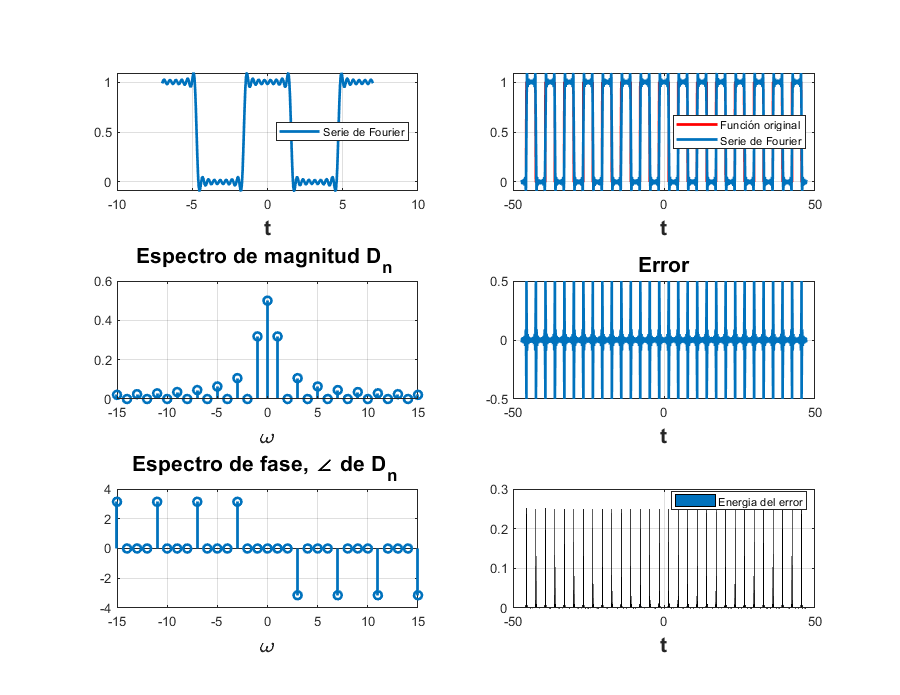
Ejemplo 6.5
d0=0.5043; a=-7; b=7; t0=0; tf=pi; f=@(t) ((t>0)&(t<=pi)).*exp(-t/2); cn=@(n) 0.5043*(2/((1+16*n^2)^(1/2))); tn=@(n) -atan(4*n); armo=4; so=@(t) f(t)+f(t+pi)+f(t+2*pi)+f(t+3*pi)+f(t-pi)+f(t-2*pi)+f(t-3*pi); sfc2(t0,tf,cn,d0,so,armo,a,b,tn)
D(-4) = 0.0019623+0.031396i D(-3) = 0.0034779+0.041735i D(-2) = 0.0077585+0.062068i D(-1) = 0.029665+0.11866i D(0) = 0.5043 D(1) = 0.029665-0.11866i D(2) = 0.0077585-0.062068i D(3) = 0.0034779-0.041735i D(4) = 0.0019623-0.031396i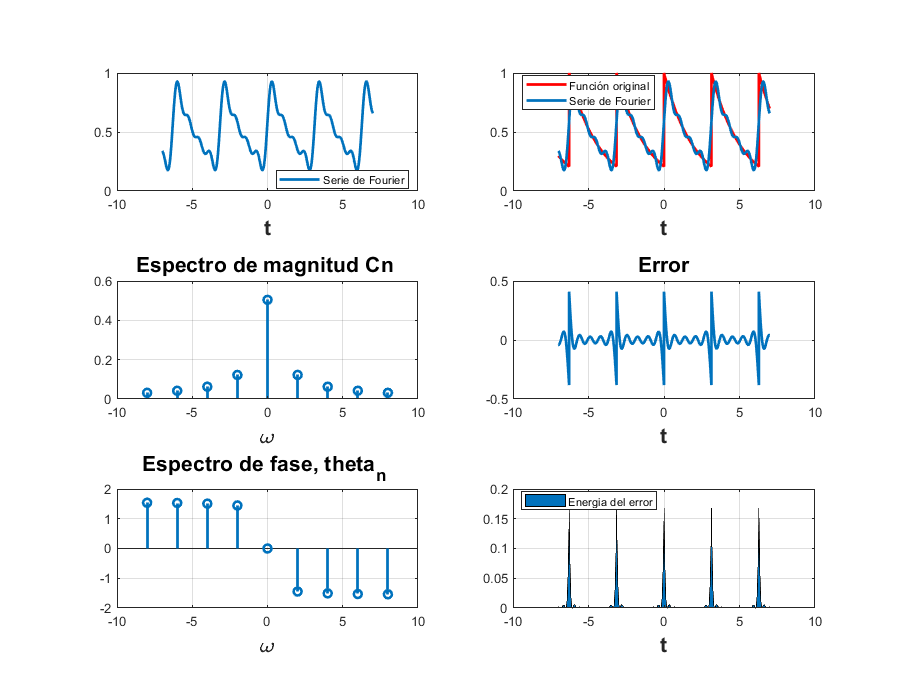
d0=0.5043; a=-7; b=7; t0=0; tf=pi; f=@(t) ((t>0)&(t<=pi)).*exp(-t/2); cn=@(n) 0.5043*(2/((1+16*n^2)^(1/2))); tn=@(n) -atan(4*n); armo=15; so=@(t) f(t)+f(t+pi)+f(t+2*pi)+f(t+3*pi)+f(t-pi)+f(t-2*pi)+f(t-3*pi); sfc2(t0,tf,cn,d0,so,armo,a,b,tn)
D(-15) = 0.00014004+0.0084027i D(-14) = 0.00016076+0.0090025i D(-13) = 0.00018643+0.0096945i D(-12) = 0.00021879+0.010502i D(-11) = 0.00026035+0.011455i D(-10) = 0.00031499+0.0126i D(-9) = 0.00038882+0.013998i D(-8) = 0.000492+0.015744i D(-7) = 0.00064242+0.017988i D(-6) = 0.000874+0.020976i D(-5) = 0.0012576+0.025152i D(-4) = 0.0019623+0.031396i D(-3) = 0.0034779+0.041735i D(-2) = 0.0077585+0.062068i D(-1) = 0.029665+0.11866i D(0) = 0.5043 D(1) = 0.029665-0.11866i D(2) = 0.0077585-0.062068i D(3) = 0.0034779-0.041735i D(4) = 0.0019623-0.031396i D(5) = 0.0012576-0.025152i D(6) = 0.000874-0.020976i D(7) = 0.00064242-0.017988i D(8) = 0.000492-0.015744i D(9) = 0.00038882-0.013998i D(10) = 0.00031499-0.0126i D(11) = 0.00026035-0.011455i D(12) = 0.00021879-0.010502i D(13) = 0.00018643-0.0096945i D(14) = 0.00016076-0.0090025i D(15) = 0.00014004-0.0084027i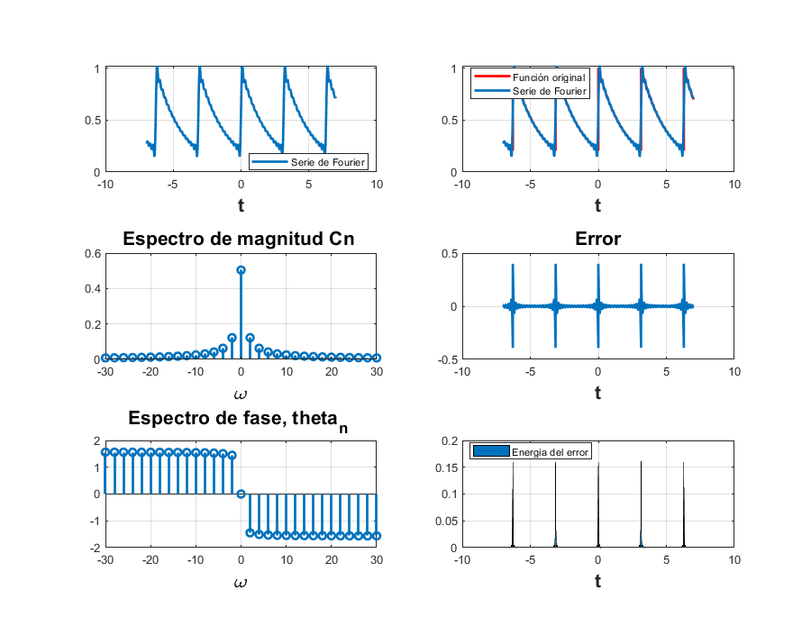
Ejemplo 6.7
T=3; dn=1/T; armo=4; a=-7; b=7; sfc3(dn,armo,a,b,T)
D(-4) = 0.33333 D(-3) = 0.33333 D(-2) = 0.33333 D(-1) = 0.33333 D(0) = 0.33333 D(1) = 0.33333 D(2) = 0.33333 D(3) = 0.33333 D(4) = 0.33333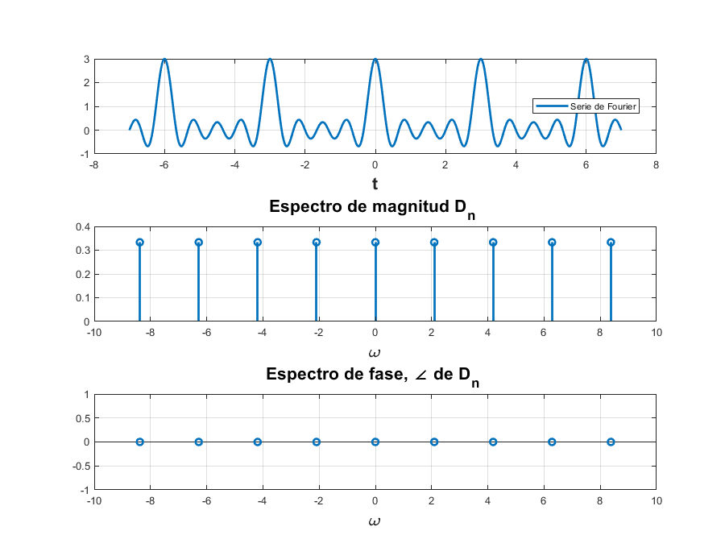
T=3; dn=1/T; armo=15; a=-7; b=7; sfc3(dn,armo,a,b,T)
D(-15) = 0.33333 D(-14) = 0.33333 D(-13) = 0.33333 D(-12) = 0.33333 D(-11) = 0.33333 D(-10) = 0.33333 D(-9) = 0.33333 D(-8) = 0.33333 D(-7) = 0.33333 D(-6) = 0.33333 D(-5) = 0.33333 D(-4) = 0.33333 D(-3) = 0.33333 D(-2) = 0.33333 D(-1) = 0.33333 D(0) = 0.33333 D(1) = 0.33333 D(2) = 0.33333 D(3) = 0.33333 D(4) = 0.33333 D(5) = 0.33333 D(6) = 0.33333 D(7) = 0.33333 D(8) = 0.33333 D(9) = 0.33333 D(10) = 0.33333 D(11) = 0.33333 D(12) = 0.33333 D(13) = 0.33333 D(14) = 0.33333 D(15) = 0.33333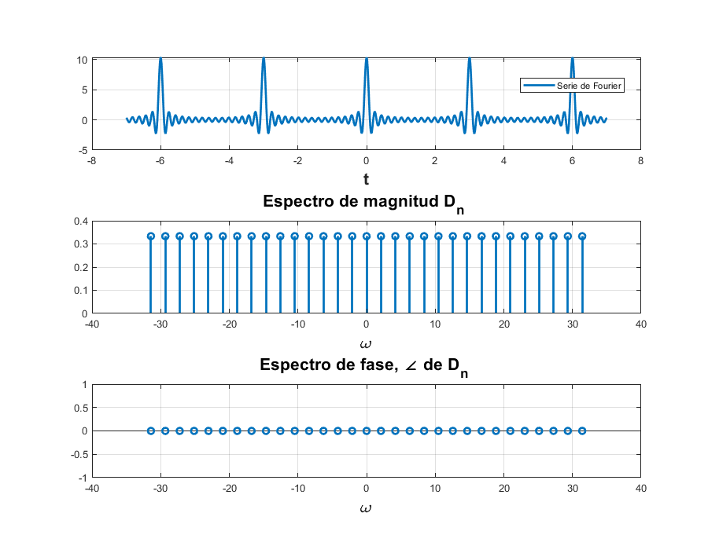
Ejercicio
x= @(t) exp(-t/2); t = linspace (-10, 10,20001); sumterms = zeros(16, length(t)); sumterms(1,:) = 0.504; for n = 1:size(sumterms,1)-1 sumterms(n+1,:) = 0.504/(1+4*n*1j).*exp(2*n*t*j); end x_N = cumsum (sumterms); figure(1); clf; ind = 0; for N = [0,1:2:size(sumterms, 1)-1] ind = ind+1; subplot (3,3,ind); plot (t,x_N(N+1,:),t,x(mod(t,pi))); axis ([-10 10 -0.2 1.2]); xlabel ('t'); ylabel (['x_{', num2str(N) ,'} (t)']); end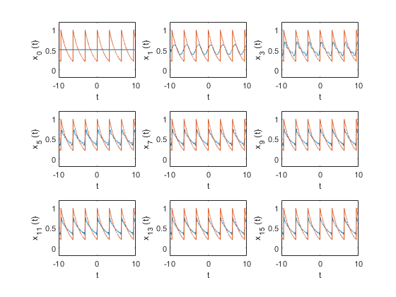
%FUNCION PARA ALGORITMO DEL TRAPECIO COMPUESTO function [int,error]= alg_trapecio(f,a,b,e) %Siendo: %f= funcion a interar por algoritmo del trapecio compuesto %a= limite inferior de la integra %b= limite superior de la integra %e= numero que ajusta el error n=15;%valor solicitado por el ejercicio h=(b-a)/n; ff=sym(f); dd=diff(diff(ff)); ddf=matlabFunction(dd); int=(h/2)*(f(a)+f(b)); error=-(((b-a)/12)*h^2)*ddf(e); suma=0; for i=1:1:(n-1) x0=a+i*h; suma=suma+f(x0); end int=int+h*suma; end
%Con Algoritmo de trapecio compuesto
n=[0:1:4]; Dn=[alg_trapecio(x_0,0,pi,pi/2)/T_0,alg_trapecio(x_1,0,pi,pi/2)/T_0,alg_trapecio(x_2,0,pi,pi/2)/T_0,alg_trapecio(x_3,0,pi,pi/2)/T_0,alg_trapecio(x_4,0,pi,pi/2)/T_0]; disp('Funcion: e^(-t/2)'); disp('De a: 0 hacia b: 3.1416'); Magnitud=abs(Dn) Angulo=angle(Dn) clf; subplot (2, 2, 1); stem(n, abs( (Dn)),'k'); axis ([-M M -.1 .6]); xlabel('n'); ylabel('|D_n|'); subplot (2, 2, 2); stem(n, angle((Dn)),'k'); axis([-M M -pi pi]); xlabel ('n'); ylabel('\angle D n [rad]'); hold on
%Con Programa de Lathi volvemos a obtener Dn
T_0 = pi; N_0 = 256; T = T_0/N_0; t = (0:T:T*(N_0-1))'; M = 10; x = exp(-t/2); x(1) = (exp(-pi/2) + 1)/2; figure(1) D_n = fft (x)/N_0; n = [-N_0/2:N_0/2-1]'; for a = 1:1:5 mag(a)=abs(fftshift(D_n(a))); end for a = 1:1:5 ang(a)=angle(fftshift(D_n(a))); end mag ang clf; subplot (2, 2, 1); stem(n, abs(fftshift (D_n)),'k'); axis ([-M M -.1 .6]); xlabel('n'); ylabel('|D_n|'); subplot (2, 2, 2); stem(n, angle(fftshift(D_n)),'k'); axis([-M M -pi pi]); xlabel ('n'); ylabel('\angle D n [rad]'); n = [0:M]; C_n(1) = abs(D_n(1)); C_n(2:M+1) = 2*abs (D_n(2:M+1)); theta_n(1) = angle(D_n(1)); theta_n(2:M+1) = angle(D_n(2:M+1)); subplot (2, 2, 3); stem(n,C_n,'k'); xlabel ('n'); ylabel('C_n'); subplot (2, 2, 4); stem(n,theta_n,'k'); xlabel ('n'); ylabel('\theta n [rad]');
La serie de Fourier exponencial compleja tiene Dn: 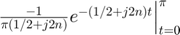 Para un resultado mas exacto : 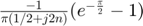
for n=2:1:5 magnitud_exacta(n)=abs((-exp(-pi/2)+1)/(pi*(0.5+2j*(n-1)))); end magnitud_exacta(1)=abs((-exp(-pi/2)+1)/(pi*(0.5))); for n=2:1:5 angulo_exacto(n)=angle((-exp(-pi/2)+1)/(pi*(0.5+2j*(n-1)))); end angulo_exacto(1)=angle((-exp(-pi/2)+1)/(pi*(0.5))); %%TABLAS DE COMPARACION MyA = table(Magnitud',Angulo',mag',ang',magnitud_exacta',angulo_exacto'); MyA(1:5,:); MyA.Properties.RowNames = {'D0','D1','D2','D3','D4'}; MyA.Properties.VariableNames{'Var1'} = 'Magnitud_ATC'; MyA.Properties.VariableNames{'Var2'} = 'Angulo_ATC'; MyA.Properties.VariableNames{'Var3'} = 'Magnitud_Lathi'; MyA.Properties.VariableNames{'Var4'} = 'Angulo_Lathi'; MyA.Properties.VariableNames{'Var5'} = 'Magnitud_Exacta'; MyA.Properties.VariableNames{'Var6'} = 'Angulo_Exacto' TRAPE=Magnitud.*exp(1j*Angulo); LATHI=mag.*exp(1j.*ang); EXACTO=magnitud_exacta.*exp(1j*angulo_exacto); Dns= table(LATHI',TRAPE',EXACTO'); Dns.Properties.RowNames = {'D0','D1','D2','D3','D4'}; Dns.Properties.VariableNames{'Var1'} = 'Dn_segunLathi'; Dns.Properties.VariableNames{'Var2'} = 'Dn_SegunAlgTrapComp'; Dns.Properties.VariableNames{'Var3'} = 'Dn_Exacto' % Comparación LATHI_EXACTO=abs(EXACTO-LATHI); TRAPE_EXACTO=abs(EXAC-TRAPE); Comp= table(LATHI_EXACTO',TRAPE_EXACTO'); Comp.Properties.RowNames = {'D0','D1','D2','D3','D4'}; Comp.Properties.VariableNames{'Var1'} = 'ERROR_Lathi'; Comp.Properties.VariableNames{'Var2'} = 'ERROR_del_Algoritmo'
El metodo utilizado en el Lathi del DFT(discrete Fourier transform) es mas acercado a los valores exactos que el algoritmo del trapecio compuesto